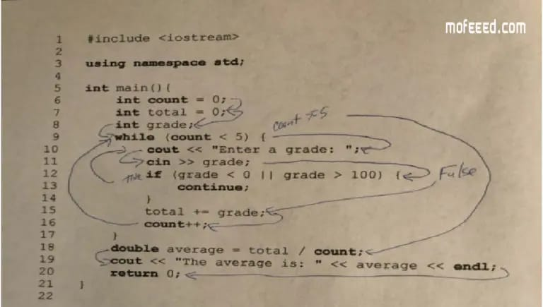
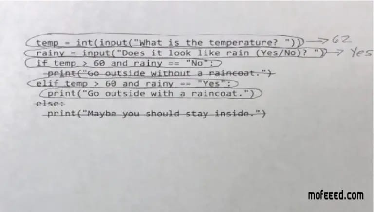

تتبع الاكواد و المتغيرات هو المرحلة الاولى في تعلم البرمجة وهي من الاشياء المهمة جدا لمن يريد ان يحترف البرمجة والتكويد . قد يسال البعض عن لماذا عملية التتبع هذه مهمة للغاية ؟! يتم استخدام تتبع المتغير والكود لتعليم الطلاب كيفية قراءة البرنامج والتنبؤ بسلوكه بدقة من خلال القدرة على اتباع تدفق التحكم من بداية البرنامج إلى نهاية البرنامج. و لا يمكن توقع أن يكتب المتعلم التعليمات البرمجية الأصلية إذا لم يتقن قراءة التعليمات البرمجية وتوقع سلوكها. ومن الطرق الممتازة لتدريس هذه المهارة تتبع التعليمات البرمجية، والمتغيرات والبرامج بأكملها
ان تتبع الكود يشير للطالب إلى تدفق التحكم في الكود البرمجي، وطرق تتبع الاكواد هي رسم أسهم تشير إلى تدفق الكود *  وضع خطوط دائرية منفذة على الاكود غير المنفذ• وضع علامات على خطوط التعليمات البرمجية التي لا يتم تنفيذها• 
هناك عدة طرق لممارسة تتبع المتغيرات . إحدى هذه الطرق هي تنفيذ تتبع متغير على أحد البرامج. غالباً ما يتم تدريس هذه التقنية في بداية البرنامج أثناء تعريف الطلاب لكيفية استخدام العبارات الحسابية لمعالجة البرنامج. حيث ان طرق تتبع المتغير كثيرة للغاية ، وتختلف هذه الطرق حسب كل لغة برمجة
قراءه وفهم الاكواد يقع معلمي البرمجة و كتب تعلم البرمجة في خطأ فادح جدا عند بداية تدريس المبتدئين للبرمجة ، وهذا الخطا هو جعل المبتدئين كتابة الاكواد في وقت مبكر جدا. حيث ان المبرمجين يحتاجون في البداية إلى قضاء الكثير من الوقت في القراءة عن البرمجة لمعرفة جميع اسرارها قبل الخوض في تطبيق الكود البرمجي مباشرة. لذلك يجب ان يكون تعلم كيفية قراءة الكود منفصلاً عن كيفية انشاء الكود ، حيث يجي ان يعرف المبرمج جميع الاكواد و انواعها قبل ان يطبقها . فعلى سبيل المثال ينبغي ان يتدربوا على قراءة الاكواد وتتبعها في الكثير من المواقف المختلفة ، وذلك لكي يتعودوا على الاكواد و يصبحوا قادرين على تتبعها بسهولة. و حتى يصبح المتعلم قادر على كتابة الكود بطريقة صحيحة ، لابد ان يكون لديه خبرة كافية في قراءة الاكواد وتتبعها عدة مرات لمعرفة الاخطاء التي فيها ان وجدت
في هذه المرحلة من تطور المتدرب، يتضمن تعلم كتابة الكود البرمجي أخذ تعليمات واضحة وبسيطة وترجمتها إلى برنامج. و فيما يلي مثال على كود واضح وبسيط تتضمن تبادل متغير قم بتعريف x و y كمتغيرات واضبطهما على القيمتين 1 و 2 ، على التوالي• قم بإعلان temp كمتغير ثالث واضبط قيمته على x• x على yاضبط قيمة • اضبط قيمة y على temp • x و yعرض القيم الجديدة لـ • paython و يجب أن يكون المبرمج المتعلم قادراً على ترجمة هذه الاكواد إلى برنامج عمل، هذه هي الترجمة إلى لغة
x = 1 y = 2 temp = x x = y y = temp
: JavaScript وفي الفقرة التالية طريقة اخرى في كتابة الكود وسنستخدم فيها لغة مطالبة المستخدم بإدخال تكلفة الصودا• إذا كانت تكلفة الصودا أقل من أو تساوي 2 دولار ، فاقترح شراء الصودا• إذا كانت تكلفة الصودا أكبر من 2 دولار ، فاقترح عدم شراء الصودا• وعندما يقوم المتدرب على ترجمة هذه الافتراضات الى كود منظم عن طريق لغة جافاسكريبت نحصل على
putstr(“Enter the price of a soda: “); let price = parseFloat(readline()); if (price <= 2.00) { print(“You can buy the soda.”); } else { print(“Do not buy the soda.”); }
وهذه نماذج بسيطة جدا عن كيفية كتابة كود برمجي صحيح عن طريق لغة باثيون و جافاسكريبت ، و توجد الكثير من لغات البرمجة الاخرى المهمة :هناك نقطتين مهمات جدا يجب ان يضعهما المتعلم المبتديء للبرمجة نصب عينيه و هما كتابة التعليقات قبل كل سطر برمجي مما يساعدك كمبتديء في فهم ما يحتويه هذا السطر مما يسهل عليك الامر ، و مما يجب الاشارة إليه ان هذه التعليقات لا تظهر في العمل المخرج بل هي تكون في الكود فقط ، سنتحدث عن التعليقات وكيفية كتابتها في درس منفص• حفظ قوالب بناء الجملة syntax أمر مهم للغاية ، فأي خطأ او تغيير في هذه ال syntax يجعل الكود لا يعمل و يظهر خطأ في نقطة ما ، لذلك لابد من تحري صحتها جيدا •